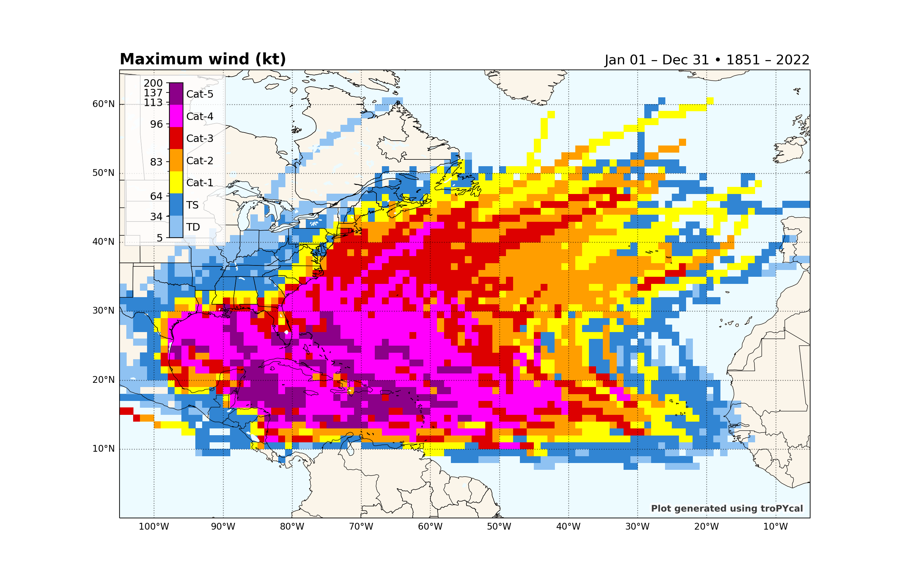
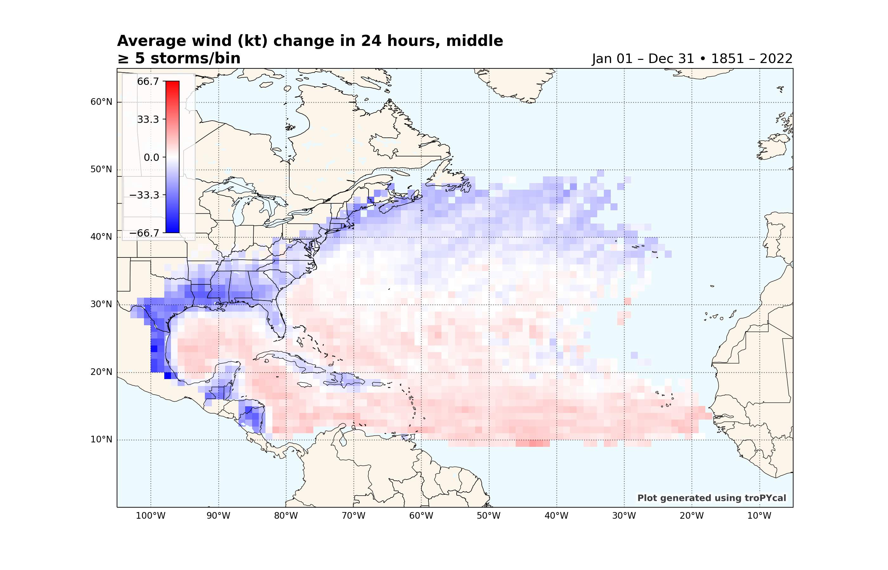

Note
Click here to download the full example code
TC Dataset Analysis¶
This sample script illustrates how to read in, visualize and analyze HURDAT2 and IBTrACS tropical cyclone databases.
import tropycal.tracks as tracks
import datetime as dt
HURTDAT2 Dataset¶
Let’s start with the HURDAT2 dataset by loading it into memory. By default, this reads in the HURDAT dataset from the National Hurricane Center (NHC) website, unless you specify a local file path using either atlantic_url for the North Atlantic basin on pacific_url for the East & Central Pacific basin.
HURDAT data is not available for the most recent hurricane seasons. To include the latest data up through today, the “include_btk” flag would need to be set to True, which reads in preliminary best track data from the NHC website.
Let’s create an instance of a TrackDataset object, which will store the North Atlantic HURDAT2 dataset in memory. Once we have this we can use its methods for various types of analyses.
basin = tracks.TrackDataset(basin='north_atlantic',source='hurdat',include_btk=False)
Out:
--> Starting to read in HURDAT2 data
--> Completed reading in HURDAT2 data (4.67 seconds)
We can quickly check to see what the dataset contains by printing the object:
print(basin)
Out:
<tropycal.tracks.Dataset>
Dataset Summary:
Basin: north_atlantic
Source: hurdat
Number of storms: 1936
Maximum wind: 165 knots (Allen 1980)
Minimum pressure: 882 hPa (Wilma 2005)
Year range: 1851 — 2021
Alternatively, converting the basin to a Pandas DataFrame provides more information about each season contained in this basin.
Retrieving storms and seasons¶
A TrackDataset object can be used to retrieve individual storms and seasons. To retrieve a Storm object, provide either a tuple of the storm name and year (e.g., ('michael',2018)), or a string containing the ID of the storm (e.g., 'AL012020'):
#Retrieve Hurricane Michael from 2018
storm = basin.get_storm(('michael',2018))
#Printing the Storm object lists relevant data:
print(storm)
Out:
<tropycal.tracks.Storm>
Storm Summary:
Maximum Wind: 140 knots
Minimum Pressure: 919 hPa
Start Date: 0600 UTC 07 October 2018
End Date: 1800 UTC 11 October 2018
Variables:
date (datetime) [2018-10-06 18:00:00 .... 2018-10-15 18:00:00]
extra_obs (int32) [0 .... 0]
special (str) [ .... ]
type (str) [LO .... EX]
lat (float64) [17.8 .... 41.2]
lon (float64) [-86.6 .... -10.0]
vmax (int32) [25 .... 35]
mslp (int32) [1006 .... 1001]
wmo_basin (str) [north_atlantic .... north_atlantic]
More Information:
id: AL142018
operational_id: AL142018
name: MICHAEL
year: 2018
season: 2018
basin: north_atlantic
source_info: NHC Hurricane Database
source: hurdat
ace: 12.5
realtime: False
invest: False
To retrieve a season, simply provide the year of the season:
#Retrieve the 2017 Atlantic hurricane season
season = basin.get_season(2017)
#Printing the Season object lists relevant data:
print(season)
Out:
<tropycal.tracks.Season>
Season Summary:
Total Storms: 18
Named Storms: 17
Hurricanes: 10
Major Hurricanes: 6
Season ACE: 224.8
More Information:
year: 2017
basin: north_atlantic
source_basin: north_atlantic
source: hurdat
source_info: NHC Hurricane Database
If you remember the name of a storm but not the year, there is functionality to search for a list of years containing a storm of the requested name:
print(basin.search_name('Michael'))
Out:
[2000, 2012, 2018]
The previous example for a Storm object illustrated how to retrieve a single storm and make a plot of its observed track. This can also be done from a TrackDataset object, using the plot_storm() method.
Note that you can pass various arguments to the plot function, such as customizing the map and track aspects. Read through the documentation for more customization options.
basin.plot_storm(('michael',2018))
Out:
<GeoAxesSubplot:title={'left':'Hurricane MICHAEL','right':'07 Oct 2018 – 11 Oct 2018\n140 kt • 919 hPa • 12.5 ACE'}>
A new function added with Tropyal v0.4 is the ability to plot a summary of all ongoing tropical cyclone and NHC Tropical Weather Outlook (TWO) activity across the North Atlantic and East Pacific basins.
Simply plug in a valid date and domain to plot over, and this plot will display all activity at the valid time. There are many customization options for this function detailed more thoroughly in the documentation.
basin.plot_summary(dt.datetime(2020,9,17,0),domain='north_atlantic')
Out:
--> Reading storm data
--> Generating plot
<GeoAxesSubplot:title={'left':'Summary & NHC 5-Day Formation Outlook','right':'Valid: 00 UTC 17 Sep 2020'}>
Climatological analyses¶
A TrackDataset object can also be used to perform various climatological analyses. We’ll start off with basic data analysis, then shift gears to plotting functionality.
First, let’s take a look at the climatology for the basin. The default period is 1991-2020, but this can be customized to any range.
basin.climatology(year_range=(1991,2020))
Out:
{'all_storms': 16.4, 'named_storms': 14.6, 'hurricanes': 7.2, 'major_hurricanes': 3.3, 'ace': 123.3, 'start_time': datetime.datetime(2022, 6, 1, 2, 24), 'end_time': datetime.datetime(2022, 11, 13, 7, 12)}
Another useful functionality for research or seasonal forecast purposes is to quickly composite multiple hurricane seasons. Simply plug in a list of years, and a year range for the climatology:
basin.season_composite([2004,2005,2008,2010,2017,2020])
Out:
{'all_storms': {'list': [16, 31, 17, 21, 18, 31], 'average': 22.3, 'composite_anomaly': 5.9, 'percentile_ranks': [50.0, 98.4, 61.3, 88.7, 67.7, 98.4]}, 'named_storms': {'list': [15, 28, 16, 19, 17, 30], 'average': 20.8, 'composite_anomaly': 6.2, 'percentile_ranks': [56.5, 96.8, 69.4, 85.5, 74.2, 100.0]}, 'hurricanes': {'list': [9, 15, 8, 12, 10, 14], 'average': 11.3, 'composite_anomaly': 4.1, 'percentile_ranks': [74.2, 100.0, 62.9, 93.5, 83.9, 96.8]}, 'major_hurricanes': {'list': [6, 7, 5, 5, 6, 7], 'average': 6.0, 'composite_anomaly': 2.7, 'percentile_ranks': [90.3, 98.4, 79.0, 79.0, 90.3, 98.4]}, 'ace': {'list': [226.7, 250.3, 145.8, 165.5, 224.8, 180.3], 'average': 198.9, 'composite_anomaly': 75.6, 'percentile_ranks': [93.5, 100.0, 67.7, 71.0, 90.3, 83.9]}}
Next we’ll take a look at plotting functionality, starting off with doing simple Accumulated Cyclone Energy (ACE) analyses. Let’s look at the cumulative year-to-date accumulated cyclone energy, with 2018 highlighted and compared against 2017:
basin.ace_climo(plot_year=2018,compare_years=2017)

Out:
<AxesSubplot:title={'left':'2018 North Atlantic Accumulated Cyclone Energy '}>
We can use the same function to perform a rolling sum, rather than a year-to-date sum. This highlights particularly active periods of tropical cyclone activity. We’ll use the same function as before, but with a rolling_sum=30 argument provided:
basin.ace_climo(rolling_sum=30,plot_year=2018,compare_years=2017)
Out:
<AxesSubplot:title={'left':'2018 North Atlantic Accumulated Cyclone Energy \n30-Day Running Sum'}>
Plot cumulative hurricane days for all categories, with 2018 highlighted:
basin.hurricane_days_climo(plot_year=2018)
Out:
<AxesSubplot:title={'left':'2018 North Atlantic Accumulated Tropical Cyclone Days'}>
Another climatological analysis available is a climatological correlation between maximum sustained wind and minimum mean sea level pressure (MSLP). While both variables are generally well correlated, factors such as background MSLP and MSLP gradient can affect this relationship.
This function plots the climatological correlation and distribution of wind-MSLP relationship, and can also plot individual storms for comparison against the climatology. We’ll look at Hurricane Sandy (2012), which started out with a fairly typical wind-MSLP relationship, but towards the end of its life cycle ended up with an anomalously low MSLP given its sustained wind speed as it substantially grew in size.
basin.wind_pres_relationship(storm=('sandy',2012))
Out:
<AxesSubplot:title={'center':'TC Pressure vs. Wind \n North Atlantic | 1851-2021'}, xlabel='Maximum sustained winds (kt)', ylabel='Minimum central pressure (hPa)'>
Gridded Analyses¶
Tropycal also offers the capability of gridding tropical cyclone data into a structured latitude / longitude grid. This is done via the TrackDataset.gridded_stats() method. This method accepts multiple input arguments for various types of analyses. This example will show some of these capabilities.
Let’s construct a 1 degree grid and plot the maximum sustained wind recorded at each gridpoint:
basin.gridded_stats(request="maximum wind")
# Let's look at the average change in sustained wind speed over a 24-hour period. By default, the value plotted is for the midpoint of the 24-hour period (so 12 hours preceding and following). We'll use the "prop" keyword argument to set the colormap to "bwr" and set the contour level range:
basin.gridded_stats(request="average wind change in 24 hours",prop={'cmap':'bwr','clevs':[-80,80]})
- 
- 
Out:
maximum wind
--> Getting filtered storm tracks
--> Grouping by lat/lon/storm
--> Generating plot
average wind change in 24 hours
--> Getting filtered storm tracks
--> Grouping by lat/lon/storm
--> Generating plot
<GeoAxesSubplot:title={'left':'Average wind (kt) change in 24 hours, middle\n≥ 5 storms/bin','right':'Jan 01 – Dec 31 • 1851 – 2021'}>
IBTrACS Dataset¶
We can also read in IBTrACS data and use it the same way as we would use HURDAT2 data. There are caveats to using IBTrACS data, however, which are described more in depth in the Data Sources page. We’ll retrieve the global IBTrACS dataset, using the Joint Typhoon Warning Center (JTWC) data, modified with the Neumann reanalysis for southern hemisphere storms, and including a special reanalysis for Cyclone Catarina (2004) in Brazil.
Warning
By default, IBTrACS data is read in from an online source. If you’re reading in the global IBTrACS dataset, this could be quite slow. For global IBTrACS, it is recommended to have the CSV file saved locally (link to data), then set the flag ibtracs_url="local_path".
ibtracs = tracks.TrackDataset(basin='all',source='ibtracs',ibtracs_mode='jtwc_neumann',catarina=True)
Out:
--> Starting to read in ibtracs data
--> Completed reading in ibtracs data (107.07 seconds)
In its current form, tropycal is not configured to support all types of analyses for global IBTrACS, particularly near the dateline. Future updates will work to improve this functionality.
Let’s make a plot of the maximum sustained wind of TCs globally:
ibtracs.gridded_stats(request="maximum wind")
Out:
maximum wind
--> Getting filtered storm tracks
--> Grouping by lat/lon/storm
--> Generating plot
<GeoAxesSubplot:title={'left':'Maximum wind (kt)','right':'Jan 01 – Dec 31 • 1851 – 2022'}>
Make a plot of the total number of storms per 1 degree gridbox worldwide:
ibtracs.gridded_stats(request="number of storms",prop={'cmap':'plasma_r'})
Out:
number of storms
--> Getting filtered storm tracks
--> Grouping by lat/lon/storm
--> Generating plot
<GeoAxesSubplot:title={'left':'Number of storms','right':'Jan 01 – Dec 31 • 1851 – 2022'}>
Make a plot of the total number of rapidly intensifying storms (>=30 kt over 24 hours) per 1 degree gridbox:
ibtracs.gridded_stats(request="number of storms",thresh={'dv_min':30},prop={'cmap':'plasma_r'})
Out:
number of storms
--> Getting filtered storm tracks
--> Grouping by lat/lon/storm
--> Generating plot
<GeoAxesSubplot:title={'left':'Number of storms\n≥ 30kt / 24hr','right':'Jan 01 – Dec 31 • 1851 – 2022'}>
Total running time of the script: ( 7 minutes 58.847 seconds)